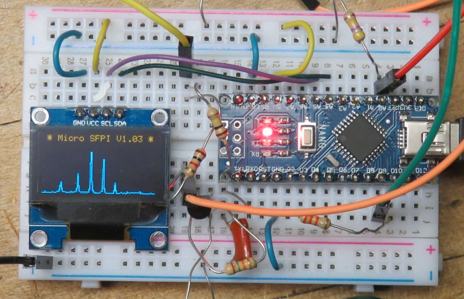
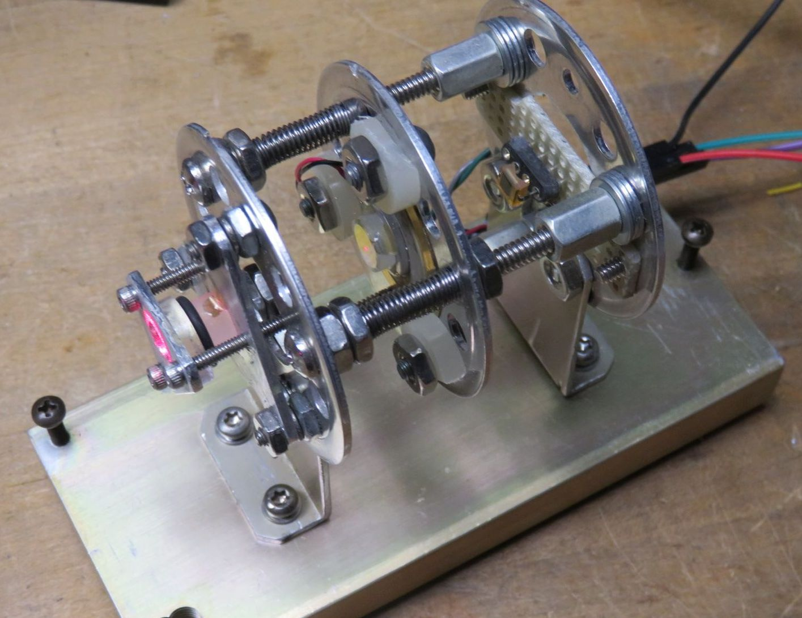
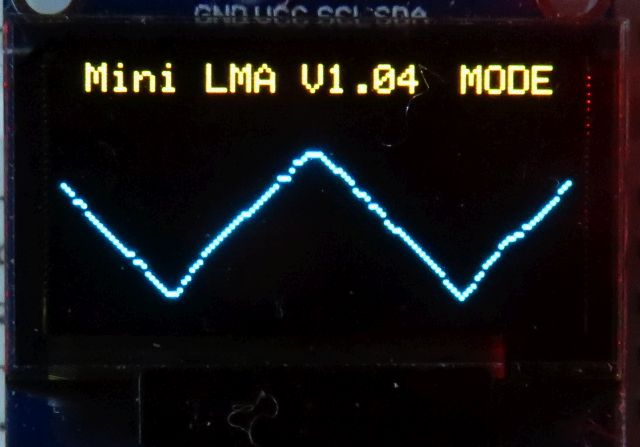
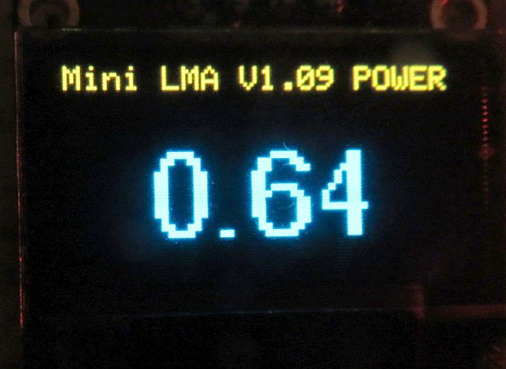
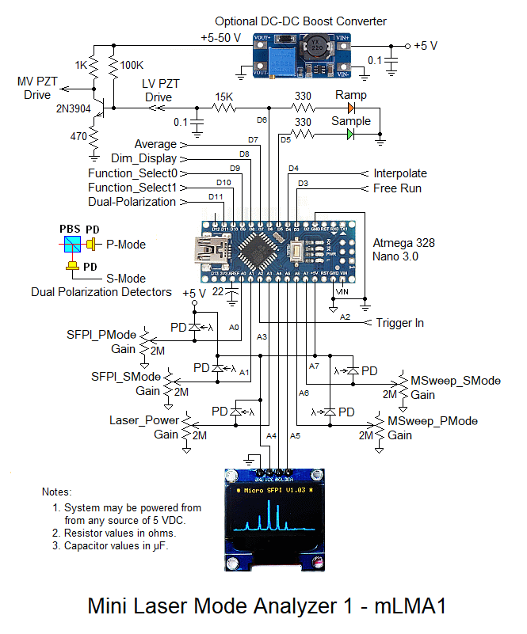
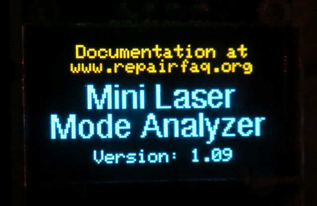
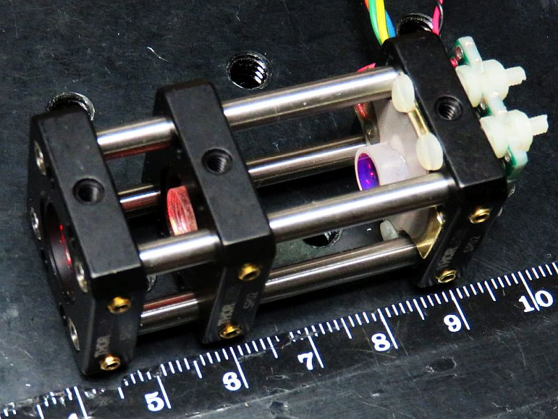
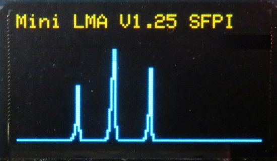
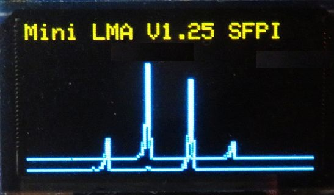

For contact info, please see the Sci.Electronics.Repair FAQ Email Links Page.
Copyright © 1994-2016
Reproduction of this document in whole or in part is permitted if both of the
following conditions are satisfied:
1. This notice is included in its entirety at the beginning.
All Rights Reserved
2. There is no charge except to cover the costs of copying.
DISCLAIMER
mLMA1 is not currently intended to replace a stand-along SFPI
controller with oscilloscope display. That may come in the future.
Acknowledgement
Thanks to Jan Beck for getting me interested
in microcomputer development. If anyone had told me
six months ago that I'd be writing code for an Arduino-compatible
board - and enjoying it (sort of) - I would have suggested
they were certifiably nuts. ;-)
Links to his Web information may be found under
References.
Mini Laser Mode Analyzer 1 (mLMA1) was originally intended as a proof of concept for implementing a Scanning Fabry Perot Interferometer (SFPI, also known as a laser spectrum analyzer) using any SFPI head that uses low voltage PZT drive. But mLMA1 turned out so well that it could have practical value, especially where a portable low cost instrument is desired for basic checking of the mode behavior of lasers intended for applications like holography. ;-) And several other functions were added.
For use as an SFPI, mLMA1 replaces the normal ramp driver and oscilloscope with a compact Arduino-based system with OLED display. A home-built SFPI head could be constructed that is the size of a small pill bottle, so the entire setup could be fit in a pocket - really. :) Its entire parts cost - excluding that of the low voltage SFPI head :) - is under $10.


But is soon became clear that other functions could be added using the same platform. The present functions are:
The Longitudinal mode plotter provides a moving graph like a chart recorder with a full screen (end-to-end) update of about 1 minute.

The Laser power meter (POWER) displays the level at an update rate of around 4 samples (which can be averaged) per second.

The Hold function locks the display and flashes a "*" in the upper right corner of the screen to indicate that the function isn't updating.
The system described below implements all of these using the Atmega 328 Nano 3.0 PCB and a hand-full of discrete parts but has limited flexibility in terms of scan rate, offset, and magnification. As in none except for trim-pots for input sensitivity. :) The default settings for the SFPI would be acceptable for a laser with an output power of 1 mW or more to display its longitudinal modes in real time. Some minimal controls may be added, though nothing fancy. But a version using the previously implemented ramp driver and photodiode preamp PCB described in the section:
While this won't replace a $5,000 instrument, it is more than adequate as-is for determining the basic health of a laser such as whether it is Single Longitudinal Mode (SLM). The display above shows the actual scan of the lognitudinal modes of a 5 mW red HeNe laser. The benefits of mLMA1-V1 include its extreme simplicity: it could be put together in an hour to go with any SFPI head with a low voltage PZT. And with only limited creaping featurism :), it is quite fast. There are no plans to make mLMA1-V1 available as a complete kit with PCB, but if there is any interest, a kit including the Atmega, OLED, all discrete components, and solderless breadboard may be available for around $25.
mLMA1 consists of 3 parts:
The Arduino-compatible Atmega 328 Nano 3.0 for mLMA1 provides the functions of both the ramp driver with an external high voltage transistor powered by a DC-DC boost converter if needed, and Digital Storage Oscilloscope (DSO) using a small OLED graphics display. It should work with home-built SFPI heads using PZT beeper elements as well as commercial ones like the SA-200 and others from Thorlabs. For these, a 5 V ramp may be sufficient eliminating the need for the boost converter and its components.
The current implementation runs at about 15 scans per second using the 64x128 pixel OLED. Since the display works like a DSO, this is way more than adequate since there is no flicker. Thus, even when scaled up to a large display in the future, the refresh rate should be acceptable. And of course, the $2 Nano is not exactly a stellar performer, so a higher performance microprocessor could be substituted if needed.
A complete pocket-size SFPI based on mLMA1 could be built into a 1x2x4 inch case. :-)
This document provides a general descriptions of the the mLMA1 hardware and firmware.
The following assumes the use of the 43 mm RoC 99.4%R mirrors used in the SFPI kits.

Most of the half dozen connections on the breadboard are made with the electronic parts themselves or bits of excess wire cut from their leads. But there will be a need for a few insulated jumpers which should use #22-#24 solid hookup wire stripped to fit in the holes.
The pinout for the OLED may differ depending on where it was purchased. Especially important are VCC and GND, which may be swapped. Connecting it with reverse polarity even for an instant will likely damage or destroy the device. And while the schematic shows VCC for the OLED being 5 V, it will run on 3.3 V and that may be safer if the source of 5 V for the Atmega isn't USB.
The following has everything except the boost circuit components, which isn't needed to scan more than 1 FSR using the typical PZT beeper element.
Electronic parts list for mLMA1-V1:
Qty Description Comments ------------------------------------------------------------------------------- 1 Atmega 328P NANO 3.0 Arduino board 1 96" 128x64 I2C SSD-1306 OLED OLED Display 1 6x8 cm Prototyping. board Should fit dual polarization 1 Super bright LED, 3 mm Sample indicator, green 1 Super bright LED, 3 mm Ramp indicator, blue 2 Resistor, 10K ohm, 1/4 W Current limiting for LEDs 4 Resistor, 470-510 ohm, 1/4 W 5V-3.3V level conversion 4 Resistor, 1K ohm, 1/4 W 5V-3.3V level conversion 2 Resistor, 15K ohm, 1/4W Ramp filter 1 Resistor, 330 ohm, 1/4 W Photodiode protection 1 Resistor, 1K ohm, 1/4 W External Trigger input *2 Trim-pot, 1M ohm SFPI P and S gain *2 Trim-pot, 100K ohm MODE P and S gain 1 Trim-pot, 1M ohm Ramp amplitude 2 Capacitor, 0.1 µF Ramp filter *2 Capacitor, 100 pF SFPI P and S PD filter (optional) *2 Capacitor, 1 nF MODE P and S PD filter (optional) 2 Capacitor, 22 µF 5V and 3.3V bypass 2 Capacitor, 22 µF REF and PD bypass 1 DIP switch, 4 position "Piano key" style feature select
* Only 1 of each required if dual polarization is not supported.
For info on the dual polarization SFPI head using Thorlabs cage parts, see Mini Laser Mode Analyzer 1 (mLMA1) Version 2.
Arduino Pin Physical Pin Function
------------------------------------------------------------------------------
D3 6 Free_Run (no trigger) if high or open
D4 7 Interpolate points if high or open
D5 8 Sample - High during actual scan or capture
D6 9 Ramp - PWM of scan ramp for SFPI only
D7 10 Average n (default 8) points if high or open
D8 11 Dim_Display if high or open
D9 12 Function_Select 0
D10 13 Function_Select 1
D12 15 Dual_Polarization (future)
D13 16 Same as D5 (Nano_LED, Atmega "L")
A0 20 SFPI_PMode detector input (0 to 5V)
A1 21 SFPI_SMode detector S-Mode input (0 to 5V)
A2 22 Trigger input - external trigger only (0 to 5V)
A3 23 Laser power meter input.
A6 26 MSweep_PMode detector input (0 to 5V)
A7 26 MSweep_SMode detectoreinput (0 to 5V)
+5V 27 +5 VDC input or from on-board regulator
VIN 30 Optional DC input (+7 to +12 VDC)
GND 4,29 Ground/Common
CAUTION: The Nano 3.0 can take +12 VDC on VIN since it has an on-board 5 V regulator. But apparently there can be problems when connecting to USB as I found out. Inadvertent ground loops (or something) can result in erasing its brain or damaging the USB chip. Exactly why this occurred is still not clear. The NANO was connected to USB and then the 12 V adapter was plugged in, at which point the USB dropped out, never to be heard from again with this board. The regulated wall adapter was on the same circuit and isolated in any case, so it should not have caused problems. The Atmega microprocessor is still running something so it's not totally dead, thus the suspicion that the problem is the USB chip. But I've been unable to change it so far, even with a programmer. Therefore, it is recommended that only the USB on a PC or laptop, a USB wall adapter, USB backup battery, or 5 V power supply be used.
When the firmware starts up, the initial display will be something like:

Except for the version number. ;-) In a second or so, it will start scanning.
There are many ways of doing this - some which may be overly complex, but what I've done for the Atmega 328 Nano 3.0 board is to go to Arduino Software and install the current version of the Arduino IDE (V1.6.9 as of May 2016). (I'm not sure if the board needs to be plugged in to a USB port during this process, but mine was. During the install process, it will ask to install the drivers. Reply "Yes" to all its requests. When the Arduino IDE is started for the first time, go to "Tools", "Board", and select "Arduino Nano". If the Nano is plugged in, its COM port should appear under "Tools", "Port".
More info on software, drivers, and more at Getting Started with Arduino and Genuino on Windows.
The more complex installations may be required if you bought the Nano from eBay or off the back of a truck, depending on whether it has the genuine FTDI USB communications chip. And even more complex if it doesn't have the bootloader installed. Links for driver installation may be found under References under "Arduino". Instructions for burning the bootloader may be found in the section: Burning Bootloaders into the Nano or Pro Micro.
The Arduino IDE can be used for compiling and uploading, though I prefer UECIDE, below, because compilation and uploading is much faster. For use with the Atmega328 Nano 3.0, either is fine. However the ATtiny and Pro Micro may only be supported by the Arduino IDE. (The latter may come up as Arduino Leonardo though.)
The UECIDE files should be unzipped to any convenient location on your computer. UECIDE requires around 160 MB there, and another 600+ MB for support files typically somewhere like c:\users\YourUserID\AppData\Local\UECIDE. This location can be changed in File->Preferences. If doing this after having configured UECIDE, copy all the files to the desired destination first, then change the data directory in File->Preferences. DO NOT delete the original UECIDE directory or the preferences file! :) Otherwise, the configuration information will all be lost.
Compared to most applications, UECIDE takes forever to start up even on a fast PC. So be patient. That's the bad news. The good news is that compiling and uploading takes literally only a few seconds, much faster than with the Arduino IDE or MPIDE (another one you don't need to know about). Go figure. :)
The first thing UECIDE will likely do is to tell you that no boards are installed and then open the Plugin Manager. If it does not, do it manually by going to Tools->Plugin Manager. At first the pane along the left will only show the word "Plugins". But after a couple minutes, it should update with a list: Plugins, Libraries, Boards, Cores, Compilers, System. The following are required:
For each of these click on "Install". Installing the arduino board will probably automagically install the other related files and may take several minutes. Confirm that each entry has a green check mark next to it.
Close the Plugin Manager and go to "Hardware" or check the status line at the bottom of the window to confirm that the proper Board (Arduino Nano w/ Atmega 328), core (Arduino 1.6.x)), and Compiler (GCC 4.8.1 for AVR) has been selected. Correct it if not.
Some other quirks of UECIDE that I've found:
Plug the Atmega board into any available USB port. The power LED should come on. If I (Sam) sent you the Atmega board, it will have been loaded with a version of the mLMA1 firmware and the user LED will be flashing at about 5 Hz rate to let you know it is alive. But by the time you've received it, the firmware will probably be out of date, so reloading will be required in any case. :)
Assuming the driver has already been installed, go to Hardware->Serial Terminal and select its COM port. Typically, this will be the highest number COM port, or perhaps the only one, since no one uses real COM ports for much of anything anymore.
UECIDE should remember the configuration settings automatically upon exiting. These are tied to each instance of the UECIDE window, so it's possible to easily deal with multiple totally different board types.
Compiling...
* Compiling sketch...
* Compiling core...
> arduino
* Compiling libraries...
* Linking sketch...
Compiling done.
Memory usage
* Program size: 7532 bytes
* Memory size: 1092 bytes
* Compilation took 8.634 seconds
Uploading firmware...
* Resetting board...
* Uploading...
* Resetting board...
* Upload Complete
Once the firmware has started, the on-board LED "L" should be flashing at around a 25 Hz rate to let you know it's alive.
The firmware is retained in non-volatile memory so uploading only needs to be done once - or until a new version is available!
The firmware may also be compiled without uploading by using Ctrl-R. Since you haven't messed with the code, it should compile without errors. This is slightly faster for testing and doesn't use the board at all so it can be off doing whatever it pleases. :)
Due to the limited resolution of the OLED display - 128x64 pixels, the display is not nice and smooth like that of an analog scope. And the amplitudes of the peaks bounce around quite a bit due to where they fall on the OLED pixel matrix. There are several options (controlled by inputs to selected Digital pins of the Nano) to add interpolation and/or averaging, but what's really needed is an anti-aliasing input filter (either analog or digital) to be able to fainthfully display the narrow spikes of well aligned high resolvance SFPIs. The most easily interpreted (if not nicest) display occurs presently with none of the options enabled since the human eye does a decent job of visualizing what the appearance should be. Improvements may or may not be implenented in for mLMA1. But there should be a mLMA2 at the very least - eventually.

That's a cm scale. :)
Here is an early trace with no interpolation:


Development has been suspended on mLMA1-V1 so all improvements and new and improved bugs will be in mLMA1-V2. :)